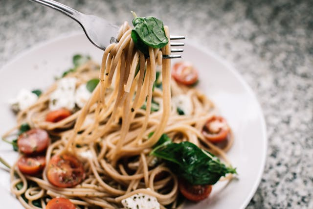

Simple Italian Pasta Recipe 🍝

Read Community Notes
Ingredients
- 200g pasta (spaghetti, penne, or your choice)
- 2 tbsp olive oil
- 2 cloves garlic (minced)
- 1 can (400g) crushed tomatoes
- 1 tsp salt
- ½ tsp black pepper
- ½ tsp dried oregano or basil (or fresh leaves)
- Parmesan cheese (for serving)
Intructions
- Boil the Pasta: Cook pasta in salted boiling water according to the package instructions. Reserve ½ cup of pasta water before draining.
- Prepare the Sauce: In a pan, heat olive oil and sauté garlic until fragrant. Add crushed tomatoes, salt, pepper, and oregano/basil. Simmer for 10 minutes.
- Combine: Toss the drained pasta into the sauce, adding a bit of reserved pasta water if needed for a smoother texture.
- Serve: Top with grated Parmesan and enjoy!